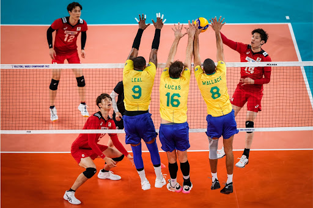
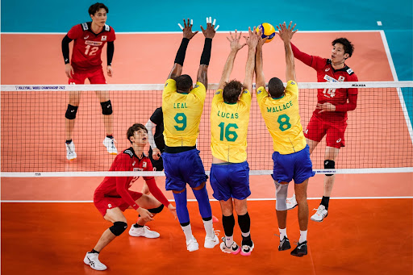
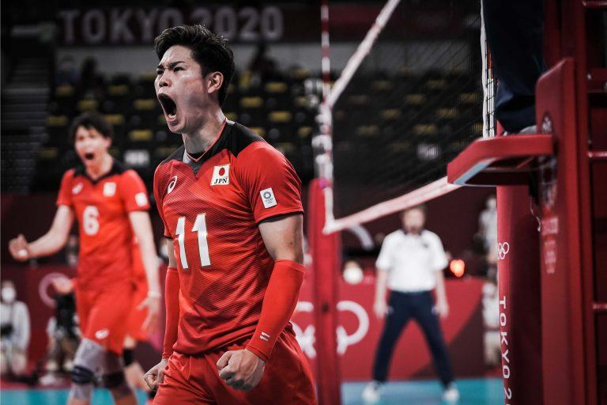
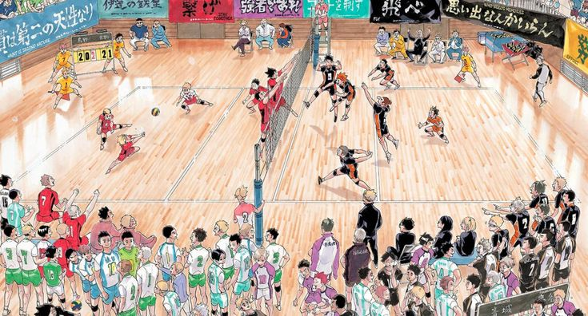
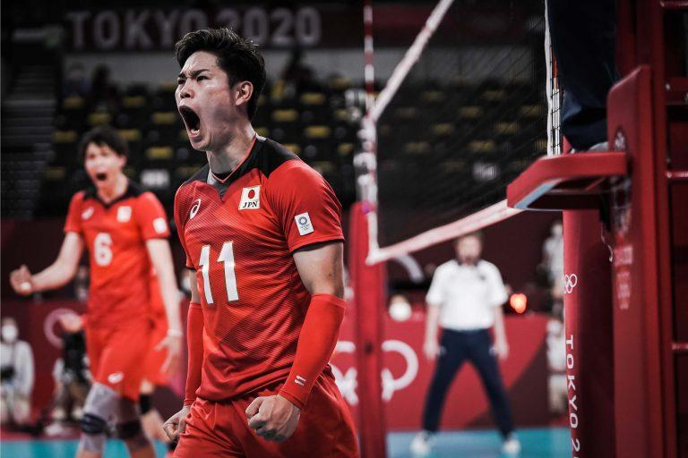
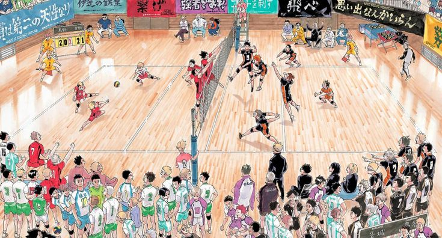

Sobre o Voleibol
O que é o vôlei: O voleibol, ou simplesmente vôlei, é um esporte coletivo praticado por duas equipes de seis jogadores cada. O objetivo é fazer a bola tocar o chão no lado adversário da quadra, evitando que ela caia no próprio campo.
Como surgiu: Criado em 1895 por William G. Morgan nos Estados Unidos, o vôlei combina elementos do basquete, beisebol, tênis e handebol.
Maiores países no vôlei:
- Brasil
- Rússia
- Itália
- Estados Unidos
- China


 

 


